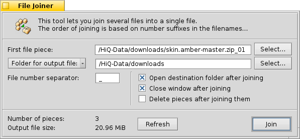

© 2011 Ramshankar
| File joiner tool |
The File Joiner is used to re-join the pieces of files created by the File Splitter tool. Though there is an option of using the self-joining executable the Joiner tool offers more options.
The File Joiner can be opened from two places within Beezer, one from the Welcome window and the other from the Archive window.
 First file pieceFolder for output file
Allows you to specify the first piece in the list of pieces that are to be joined. Clicking the "Select" button lets your browse your computer and choose a file that is the first piece of a series of pieces that need to be joined. You can alternatively, directly type in the path of the first piece file in the textbox.
File number separator
When clicked gives a list of recently chosen directories. Clicking the "Select" button lets you browse your computer and choose a directory. You can alternatively, directly type in the path of the folder in the textbox. This directory is where Beezer will create the joined file.
Open destination folder after joining
The file number separator separates the file name from the split order number. Click here for more information.
Close window after joining
If this option is checked, after joining of the files is complete, the folder in which the joined file was created is automatically opened
Delete pieces after joining
Closes the File Joiner tool after joining is complete. If the join operation is cancelled, the window isn't closed even if this option is specified.
Number of pieces
If this option is checked, the piece/chunk files are automatically deleted after they are joined. The pieces will not be deleted if the operation is cancelled before it's complete.
Output file size
Shows you how many pieces are there to be joined. When using custom number separators, this is a good indication that you have specified it correctly.
Refresh
Shows you the estimated size of the joined file before creating it.
Join!
Click this will update the above two controls.
! Tip
This will start the process of joining the files.
You can drop the first piece file to the File Joiner window. Also, you can drop a folder on the File Joiner window to specify the folder for creating the joined file.
| File Splitter tool |